Updating SCCM Apps - The Fun and Easy Way (GUI)
Author: Steve
A follow-up to a topic from HTH0008
There's a bunch of ways to skin a cat (don't do that though), but you want the most efficient method (seriously, don't skin a cat). SCCM provides a bunch of good and bad ways to update an application in your environment, some of which may require more overhead and nannying than others. I settled on a method that keeps things reasonably simple while ensuring your update will make it out to systems that already have the application deployed to them. Needless to say, I'm not preaching this as the end-all-be-all process, but rather, A working and usable process.
Let's dive in!
So, as you may or may not be aware, you will be dealing with MSI-based applications or Non-MSI "script" based applications most of the time. The process of updating an SCCM application varies slightly depending on whether it is an MSI application or not. MSI installers tend to feed Windows/SCCM a lot more handy information automatically as opposed to script-based installers where you need to fill in more blanks, figure out silent installation commands, do research on detection methods, and whatever else is necessary. I will cover both installer types.
In these examples, we will assume you already have the application previously configured/deployed. An easy way to update it without re-deploying and reconfiguring it is to just update the content and deployment type. How you do this depends on whether it is an MSI installer or not.
Let's start with the non-MSI (script) based method. In this example, we will update Notepad++.
Let's first examine our source file structure. I tend to use a source file directory that is insensitive to version numbers. For example, I store the Notepad++ installer files in a folder called "Latest." I will also include a blank text file with the title being the version of the program so I know if it's current or not. See the below screenshot for a visual example if this isn't making much sense:
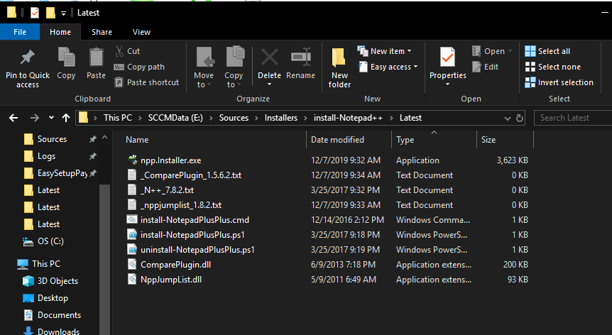
As you can see above, you'll notice I have a few extra files in here as well. I use PowerShell scripts to cover the installation and uninstallation of this application, and will feed that information into the Deployment Type later on below. Also, I have a few plugins copied into the plugins directory, such as the Compare plugin and NppJumpList. I also keep track of these plugin versions via separate text files. These are optional of course.
OK, so now that we've established the ground rules of the source file structure, let's start by getting the newest installer for Notepad++, download it to the above folder, replacing the existing npp.installer.exe (keep it as the same exact file name).
In SCCM, go to your Application's Deployment Type and click "Update Content" either in the Ribbon menu or the Deployment Type tab's right click menu for the Deployment Type:
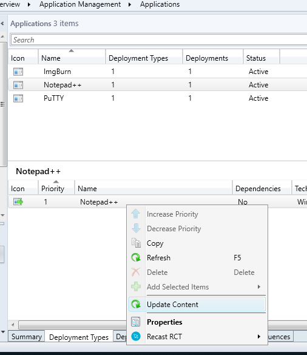
Confirm the content update when it asks:
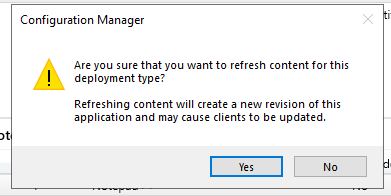
Go to your Application's properties, and update the version so it displays the right version in Software Center (this is visual only):
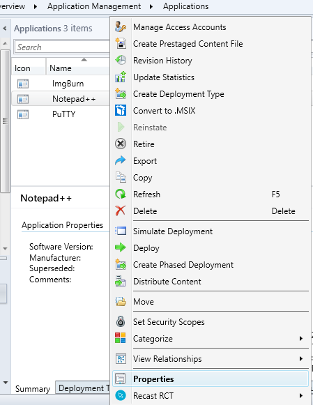
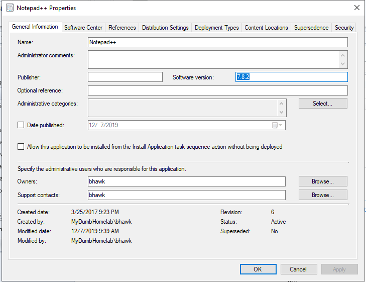
Go into the Deployment Type tab and click "edit" on the Deployment Type:
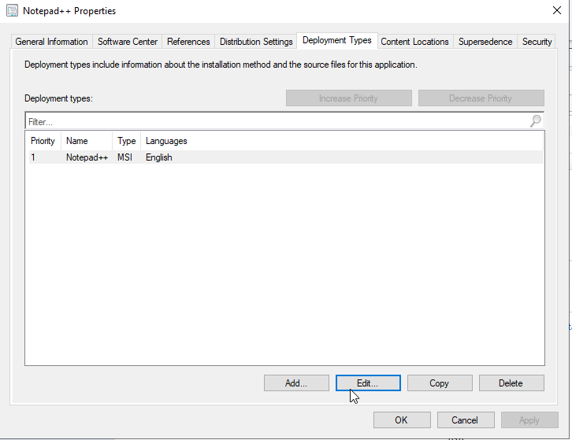
Reminder: In this example we're assuming your source file directory is insensitive to version numbers.
In this example, the content location is a path ending in a folder called "Latest" to allow for updated files/executables to be dropped in without application configuration disruption:
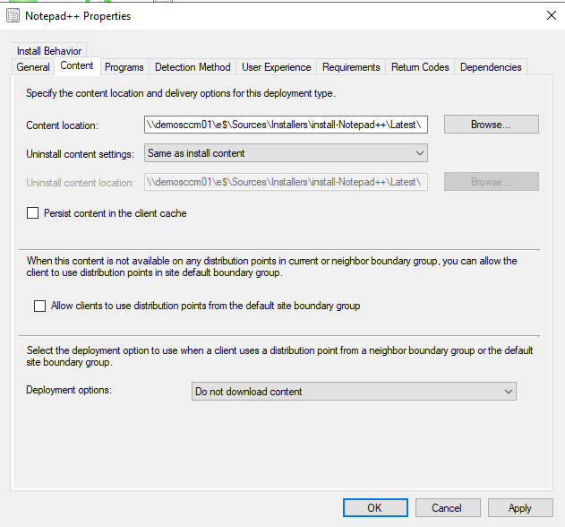
Go to your Detection Method and edit your detection method's clause to reflect the new version. Please note this will vary from application to application, and will require some legwork on your part to determine the correct values. For Notepad++, it's pretty simple, as denoted below by a registry string:
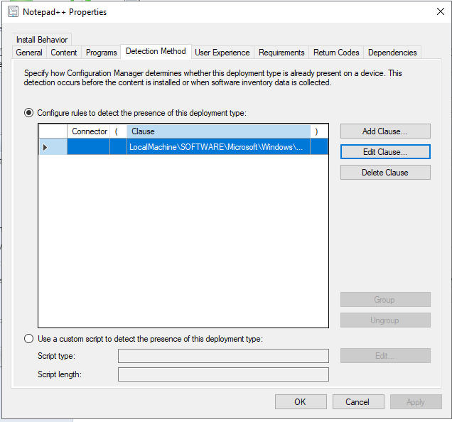
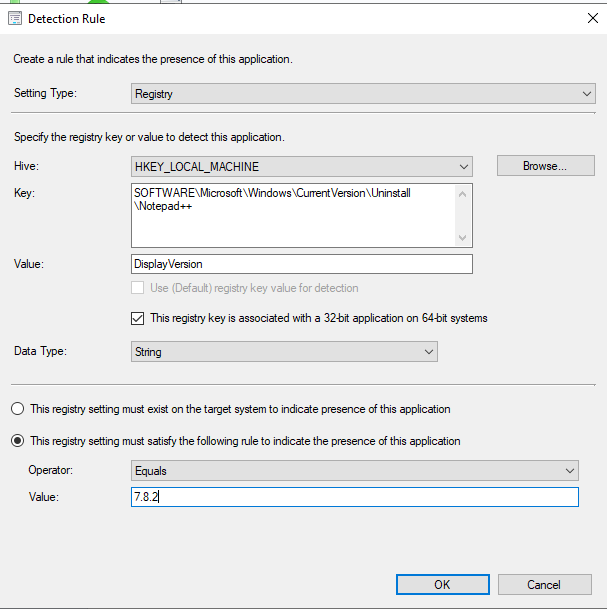
After that, you're done! Any existing deployment will reach out to computers and install the updated program. If a collection is put into a maintenance schedule, it will download the new content and install it at the next install window.
Now, let's use an MSI-based installer as our next example. We'll use PuTTY below:
Just like the non-MSI installer, our core goal will be to update/replace the old version's deployment type with the current version's deployment type.
Just like before, download to your source file directory, replacing the installer. Again, making the file name version-agnostic here (and instead keeping track of the version via a text file) makes this really easy:
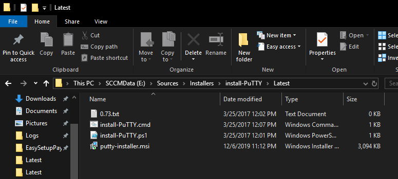
Unlike the script-based installer, we need to first create a new Deployment Type:
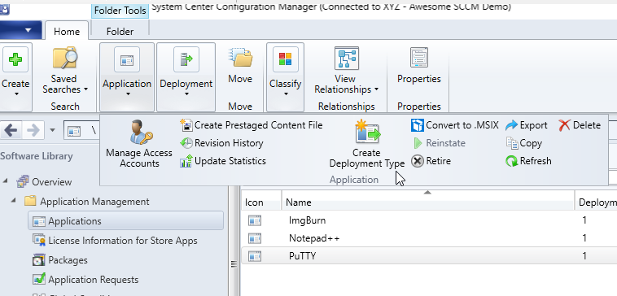
Point it to your source MSI installer:
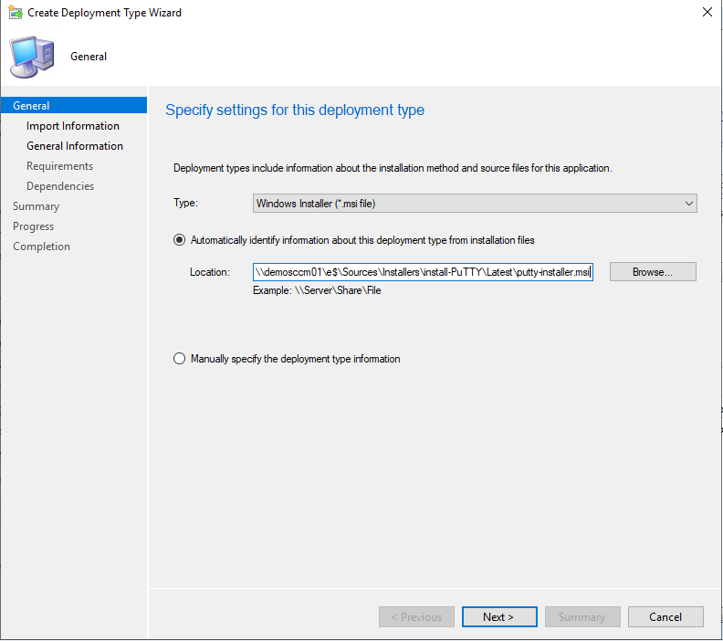
Name it/set an installation program path if you wish (replace it with a powershell script call as needed)/etc:
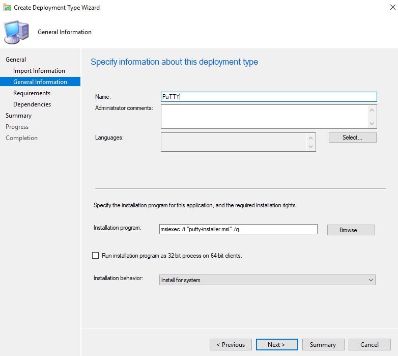
Confirm:
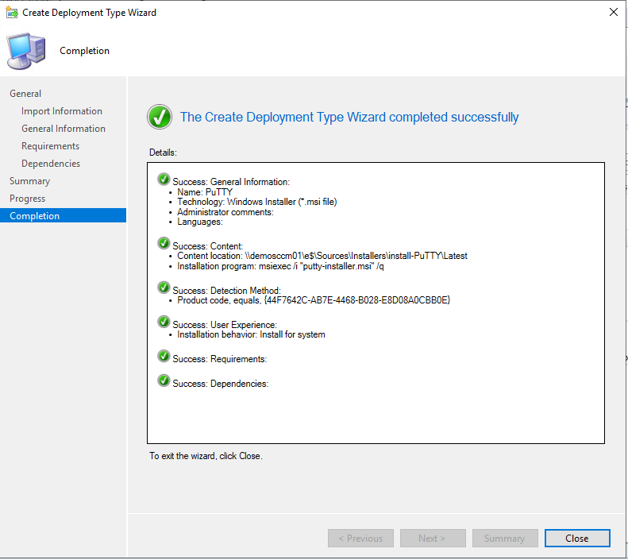
Then, we need to delete the older/previous deployment type, leaving only the newest version's deployment type. The process is straightforward:
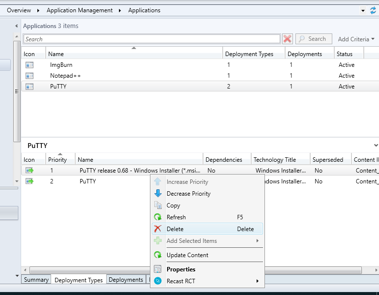
Make sure only one remains:

Now, modify the Deployment Type Properties and adjust anything as needed if necessary (in the below example, I replaced the program command line path with a powershell script call. This is up to you depending on your style/environment):
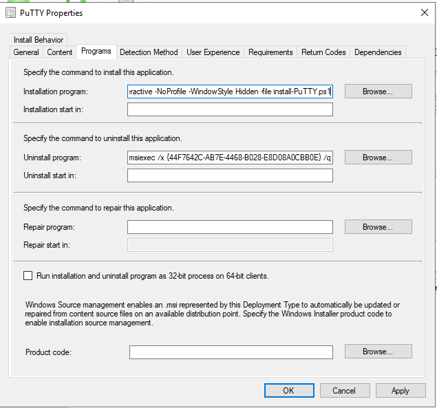
After that, you're done! Any existing deployment will reach out to computers, those computers will fail the updated detection methods, and thus they will pull down and install the newly-updated application. Note that if a collection is put into a maintenance schedule, it will download the new content at the next refresh cycle, and install it at the next open install window.
I hope this perspective helps you in not only understanding ways to update applications, but maybe save you time time and provide some efficiency in your application updates.
I also wanted to save this for the very end, but all of this is also scriptable via PowerShell! Perhaps in a future blog post I will touch on how to make this possible.
Hope this helps!